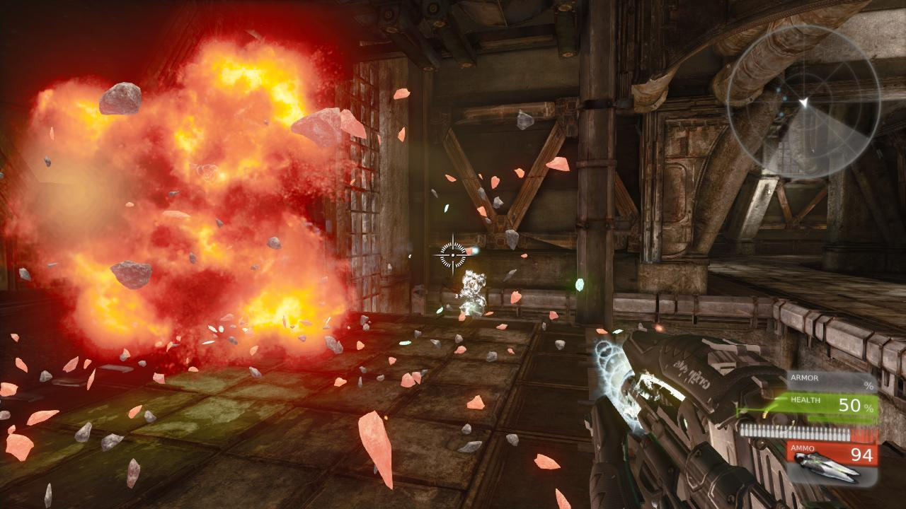
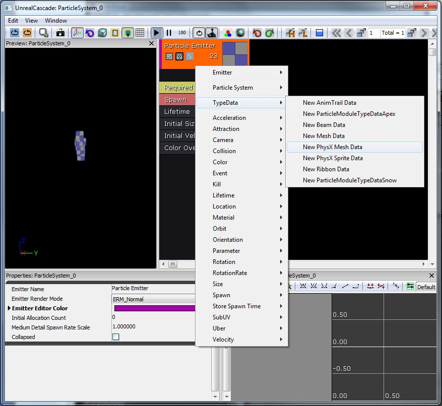
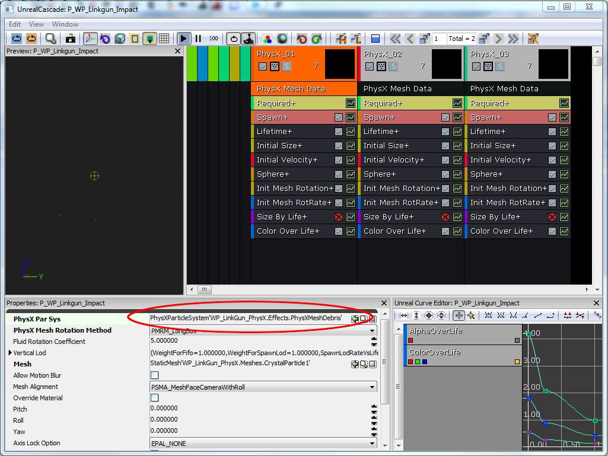
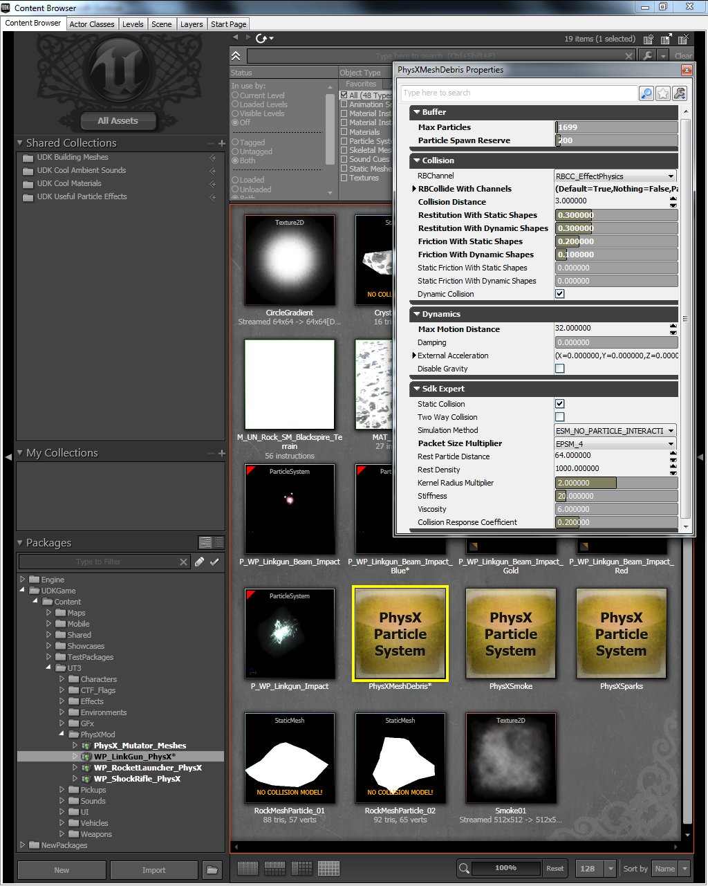
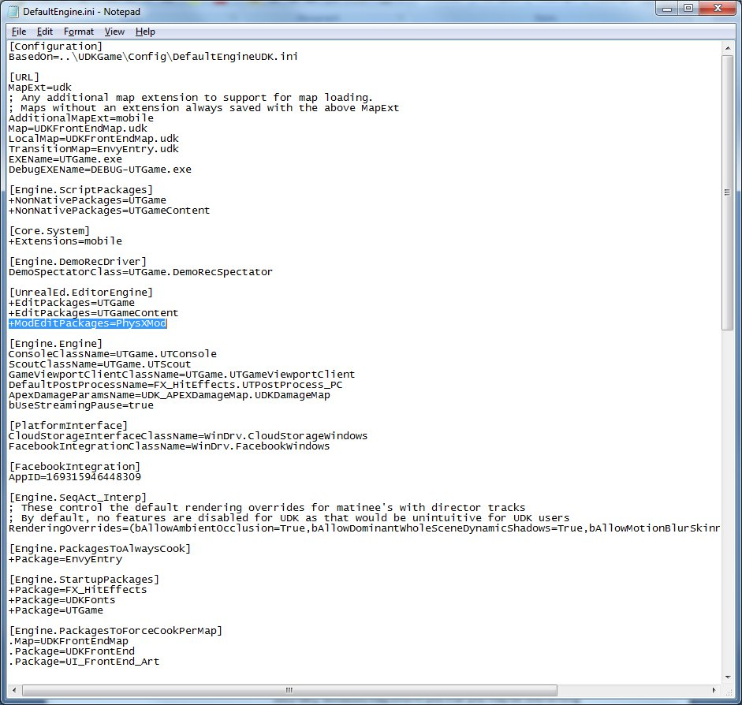
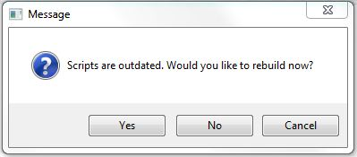
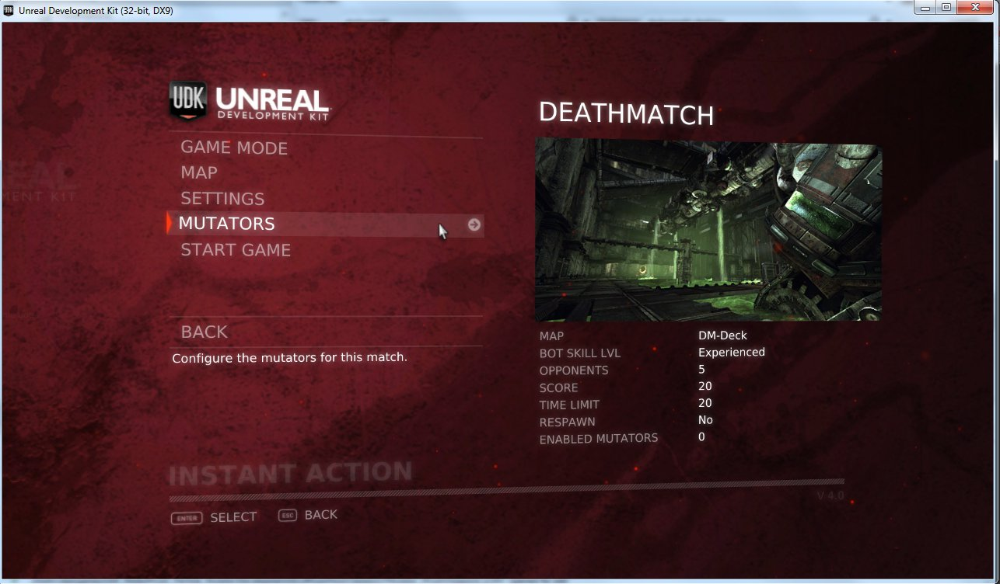
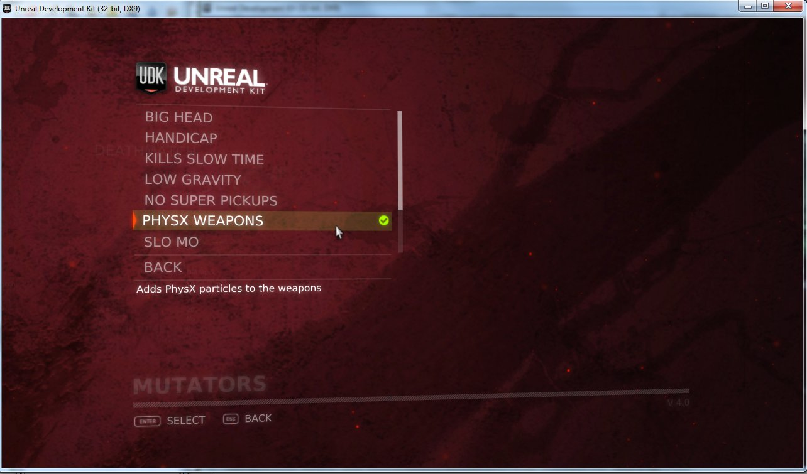
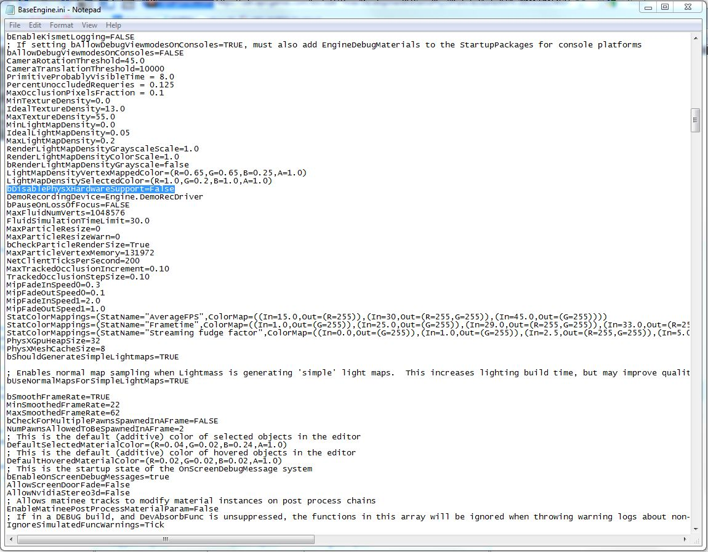

UDN
Search public documentation:
DevelopmentKitGemsPhysXParticlesStarterKitKR
English Translation
日本語訳
中国翻译
Interested in the Unreal Engine?
Visit the Unreal Technology site.
Looking for jobs and company info?
Check out the Epic games site.
Questions about support via UDN?
Contact the UDN Staff
日本語訳
中国翻译
Interested in the Unreal Engine?
Visit the Unreal Technology site.
Looking for jobs and company info?
Check out the Epic games site.
Questions about support via UDN?
Contact the UDN Staff
UE3 홈 > UDK 젬 > PhysX 파티클 스타터 키트
UE3 홈 > 프로그래밍 시작하기 > PhysX 파티클 스타터 키트
UE3 홈 > 피직스 홈 > PhysX 파티클 스타터 키트
UE3 홈 > 프로그래밍 시작하기 > PhysX 파티클 스타터 키트
UE3 홈 > 피직스 홈 > PhysX 파티클 스타터 키트
PhysX 파티클 스타터 키트
문서 변경내역: James Tan 작성. 홍성진 번역.
UDK 2011년 11월 버전으로 최종 테스팅
개요
이 스타터 키트는 UDK 에 제공되는 UTGame 예제에 PhysX 파티클을 추가하는 법에 대한 예제입니다. 이 문서의 기법에서는 UTGame 에 제공되는 Mutator 함수성을 활용합니다. PhysX 파티클은 주변 환경에 부딪히면서 특수 효과의 현실성과 플레이어의 몰입감을 높여줄 수 있다는 점에서 독특한 파티클입니다.

포함된 내용
- 웨폰 이펙트의 PhysX 파티클 버전 - PhysX 파티클이 추가된 무기는 다음과 같습니다.
- Rocket Launcher - 빨갛고 뜨거운 돌덩이가 바깥 방향으로 폭발, 바닥에 떨어지며 식습니다.
- Link Gun - 주 모드 발사시 맞을 때마다 밝은 녹색 유리조각이, 부 모드는 녹색 불똥이 튑니다.
- Shock Rifle - 주 모드 발사시 보라색 불똥이 튑니다.
- PhysX Weapon Mutator (UTMutator_PhysXWeapons.uc) - 기존 무기를 PhysX 버전으로 대체하는 클래스입니다.
- Weapons Replacement Map (DefaultPhysXMod.ini) - 예전 무기와 새로운 무기에 대한 매핑 부분이 들어있는 ini 파일입니다.
- Drain (UTDrain.uc) - 월드를 뚫고 떨어질 수 있는 파티클을 잡아내기 위해 레벨에 놓는 부분입니다.
콘텐츠와 코드 구조
PhysX 파티클 시스템 만드는 법
PhysX 메시 파티클 시스템을 만드는 방법은, 캐스케이드에서 파티클 시스템을 만들고 TypeData 를 New PhysX Mesh Data 로 만들면 됩니다. 파티클 시스템에 적용되는 물리 법칙을 조정하려면, 새로운 PhysXParticleSystem 을 만든 다음 PhysX Mesh Data 를 사용하는 이미터에 연결해 주면 됩니다. 시뮬레이션 효율을 높이려면 PhysXParticleSystem 을 여러 이미터에 걸쳐 공유해 보시기 바랍니다. (이를테면 돌과 철 잔해 파티클에 같은 PhysXParticleSystem 을 사용할 수도 있습니다.)- TypeData 를 PhysX 사용하도록 변경합니다:

- 여기서 PhysXParticleSystem 을 PhysX 이미터에 연결합니다:

- PhysXParticleSystem 의 피지컬 파라미터 입니다:

파티클 시스템을 무기에 연결하는 방법
여기서 사용하는 UTGame 예제에는 이미 무기가 정의되어 있습니다. 원본 클래스를 수정하여 파티클 시스템을 활용하도록 할 수도 있지만, 그렇게 되면 원래 게임의 작동방식도 바뀌게 됩니다. Mutator 함수성을 사용하면 PhysX 파티클 추가를 모드로 만들어 플레이어가 원하는 대로 켜도록 할 수 있습니다. 가장 먼저 필요한 것은 PhysX 파티클 시스템을 활용하는 무기 버전을 만드는 것입니다. UTProj_RocketPhysX.uc 파일을 예로 들어 보겠습니다. 이 클래스는 원래 UTProj_Rocket.uc 클래스에서 파생되어, 코드의 defaultproperties 부분에서 ProjExplosionTemplate 를 덮어쓰고 있음을 알 수 있습니다. 이런 방식으로 다른 웨폰과 프로젝타일에 대한 클래스를 파생시켜 모든 PhysX 파티클 시스템을 연결해 줍니다.
class UTProj_RocketPhysX extends UTProj_Rocket;
defaultproperties
{
ProjExplosionTemplate=ParticleSystem'WP_RocketLauncher_PhysX.Effects.P_WP_RocketLauncher_RocketExplosion'
}
UTGame 에서 새로 만든 무기를 선택하는 방법
앞서 말한 대로 Mutator 함수성을 활용할 것입니다. 여기에 관여되는 핵심 파일이 몇 가지 있습니다.- DefaultPhysXMod.ini 파일에는 무기와 그 대체되는 것에 대한 목록이 들어 있습니다. 여기에다 원래 무기와 그것을 대체할 신버전 무기를 지정하게 됩니다.
[PhysXMod.UTMutator_PhysXWeapons] WeaponsToReplace=(OldClassName="UTWeap_LinkGun",NewClassPath="PhysXMod.UTWeap_LinkGunPhysX") WeaponsToReplace=(OldClassName="UTWeap_RocketLauncher_Content",NewClassPath="PhysXMod.UTWeap_RocketLauncher_ContentPhysX") WeaponsToReplace=(OldClassName="UTWeap_ShockRifle",NewClassPath="PhysXMod.UTWeap_ShockRiflePhysX")
- UTMutator_PhysXWeapons 클래스는 기본 UTMutator 클래스를 확장하고 PostBeginPlay 함수를 구현합니다. 이 함수에서 게임 인벤토리를 검색하여 신버전으로 갈아치울 무기를 검색하는 부분을 볼 수 있습니다. DefaultPhysXMod.ini 파일에서 config 키워드로 WeaponsToReplace 변수를 지정하여 입력한 값을 사용합니다. 게임에서 그 무기를 집어든 경우 다른 또다른 검사를 해야 하며, CheckReplacement 함수에서 이루어집니다.
- 새로운 Mutator 함수가 메뉴에 표시되도록 하려면, PhysXMod.ini 안에 UTUIDataProvider_Mutator 를 만들어야 합니다. 마지막으로 같은 파일 그 부분에다 FriendlyName 과 Description 을 넣어야 합니다.
드레인은 무엇이며 그 존재 이유
드레인(drain, 배수구)이란 PhysX 파티클이 맞닿으면 지워버리는 부분을 말합니다. 레벨과 파티클 시스템 구성 방식에 따라 맵을 벗어나 월드 아래로 무한정 떨어지게 될 수도 있습니다. 그렇게 되면 퍼포먼스와 렌더링 문제가 생길 수 있는데, 그런 문제를 방지하기 위해 레벨 아래에다 특수한 모양을 만들어 떨어지는 파티클을 잡아낼 수 있도록 하고 있습니다. UTDrain 클래스는 디폴트를 적절히 설정하여 그 모양을 드레인으로 만듭니다. UTMutator_PhysXWeapons 의 PostBeginPlay 함수는 레벨 이름에 따라 그에 걸맞는 드레인을 로드합니다. 무기 대체 코드 바로 아래에 이러한 동작이 일어나는 부분을 확인할 수 있습니다.플레이어와 파티클 충돌
이 데모에서는 플레이어가 파티클과 충돌하지 않지만, 이펙트에 따라서 충돌하게 만들고 싶을 수가 있습니다. 상호작용이 중요한 예로 물리 연기를 들 수 있습니다. 이 작업을 위해 필요한 단계는 다음과 같습니다:- 스켈레탈 메시에 피직스 애셋 추가
- "Has Physics Asset Instance" 를 참으로 설정
- "BlockRigidBody" 를 참으로 설정
- PhysX 파티클이 스켈레탈 메시와 같은 채널에 있는지 확인
스타터 키트 활용법
- UDK 를 다운로드 합니다.
- UDK 를 설치합니다.
- 첨부된 ZIP 파일을 다운로드 합니다.
- 내용물을 UDK 기본 디렉토리에 풉니다. (예: C:\UDK\UDK-2011-11\) 기존 파일이나 폴더를 덮어쓰겠냐는 창이 뜨면 모두 예를 선택합니다.
- UDKGame\Config 디렉토리 안의 DefaultEngine.ini 파일을 메모장(Notepad)으로 엽니다. (예: C:\UDK\UDK-2011-11\UDKGame\Config\DefaultEngine.ini)
- EditPackages 를 찾습니다.
- +ModEditPackages=PhysXMod 줄을 추가합니다.

- 시작 메뉴에서 UDK Game 을 클릭하면 스크립트를 다시 컴파일하겠냐고 묻는 것을 볼 수 있습니다. "예" 를 선택하세요. UDK 가 스크립트 빌드를 마치면 창을 닫습니다.

- 시작 메뉴에서 UDK Game 을 클릭하여 UDK 를 엽니다.
- 메뉴에서 Instant Action 을 선택합니다.
- Mutators 를 선택합니다.

- PhysX Weapons 를 선택합니다.

- Back 을 선택합니다.
- Start Game 을 선택합니다.
- 무기를 발사하면 무기 충격시 PhysX 파티클이 뿜어져 나오며 배경에 부딛히는 것을 볼 수 있습니다.
NVIDIA 하드웨어 가속 기능 켜는 방법
- 환경에 있는 파티클의 수와 그 수명 기간에 따라서 하드웨어 가속 기능을 켜면 그 퍼포먼스가 크게 향상될 수도 있습니다. 이 부분은 NVIDIA 8800 이상의 GPU 에만 해당됩니다. 가속 기능은 Engine\Config\BaseEngine.ini 파일을 열고 bDisablePhysXHardwareSupport=False 로 설정해 주면 켤 수 있습니다.

내려받기
- 이 스타터 키트에 사용된 코드와 콘텐츠 내려받기.